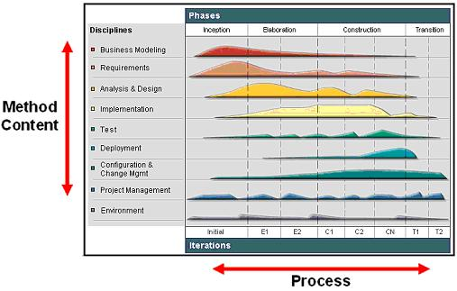
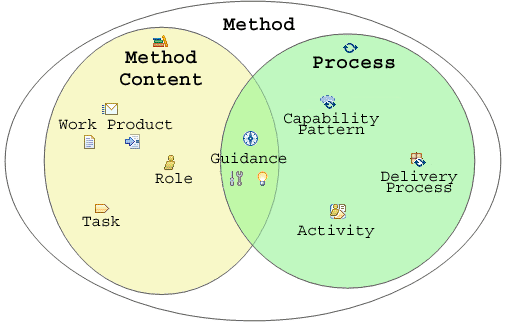

| Основные сведения об архитектуре методов |
 |
|
| Материалы |
|---|
Что такое UMA?Архитектура UMA (Unified Method Architecture) представляет собой метамодель разработки процессов, в которой определены схема и терминология представления методов в форме их процессов и наполнения. Дополнительные сведения об этом приведены в разделе Концепция: Ключевые возможности архитектуры UMA. Фундаментальные принципы UMAАрхитектура UMA основана на следующих основных принципах разделения:
Основные элементы UMAГлавный принцип архитектуры UMA заключается в отделении многоразового базового наполнения методов от применения этих методов в процессах. Практически все элементы UMA существуют в рамках этой парадигмы. В архитектуре UMA многоразовое базовое наполнение методов отделено от применения этого наполнения в конкретных приложениях. Наполнение метода содержит информацию о результирующем продукте, необходимых навыках и пошаговых инструкциях по достижению конкретных целей разработки независимо от расположения этих элементов в жизненном цикле разработки. Процессы представляют собой упорядоченные последовательности элементов методов, настраиваемые для конкретных типов проектов. Например, в рамках проекта по разработке программного продукта с нуля могут быть предусмотрены операции "разработка видения" или "проектирование вариантов", схожие с аналогичными операциями в проекте расширения функциональных возможностей существующей системы. Однако данные задачи могут выполняться в этих проектах в разные моменты времени, и основное внимание в них может уделяться разным вещам. Кроме того, разных проектах эти задачи могут выполняться в разных вариациях. На следующем рисунке наполнение метода и процесс представлены в двух разных измерениях для иллюстрации различий между ними:

Наполнение метода и Отделение наполнения методов от процессов реализовано на уровне ключевых концепций UMA, как показано на следующем рисунке. Метод (или окружение метода) состоит из наполнения, описанного в терминах продуктов работы, ролей, задач и категорий, и процессов, описанных в терминах операций, шаблонов возможностей и процессов поставки.  Обзор позиционирования основных концепций UMA в зависимости от того, что они представляют: наполнение методов или процессы Предусмотрены следующие элементы наполнения методов: Предусмотрены следующие ключевые элементы процессов: Указания могут принимать различные формы: |
© Copyright IBM Corp. 1987, 2005 Все права защищены |